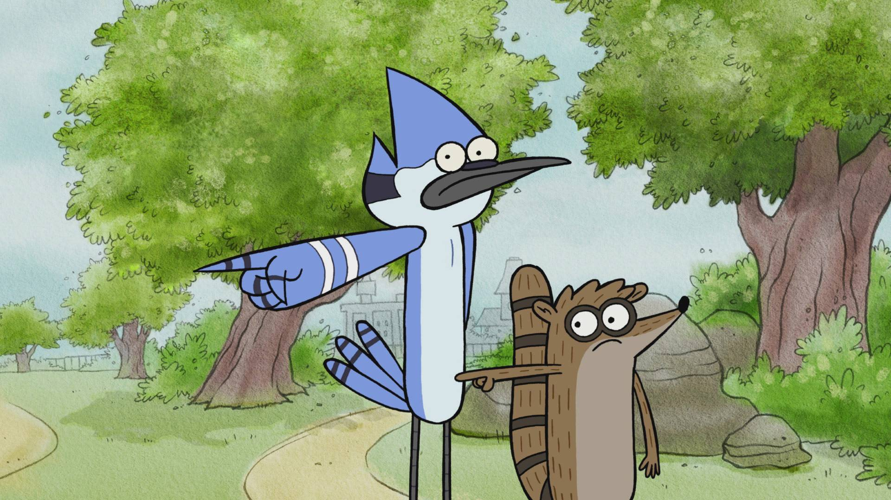
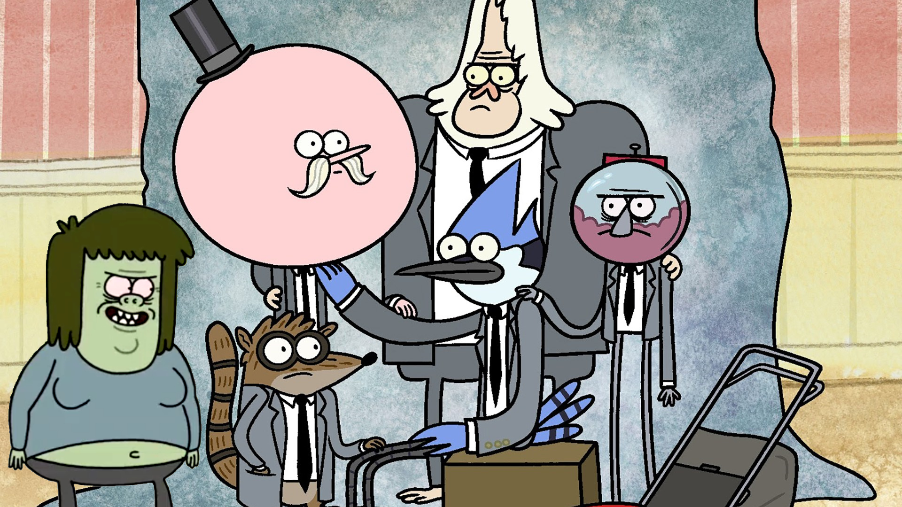
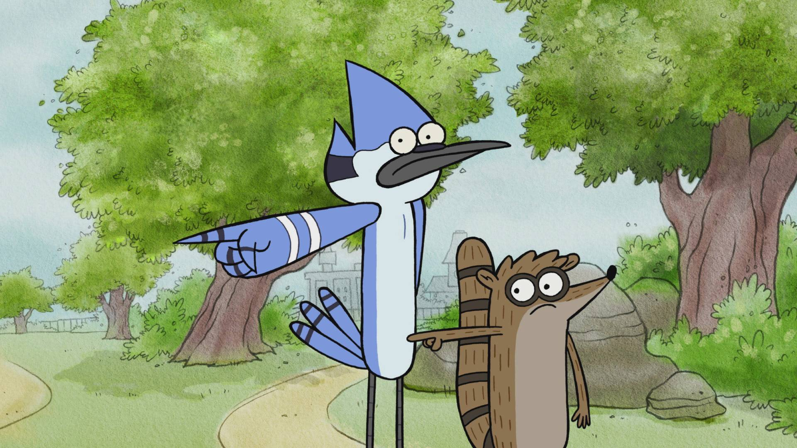
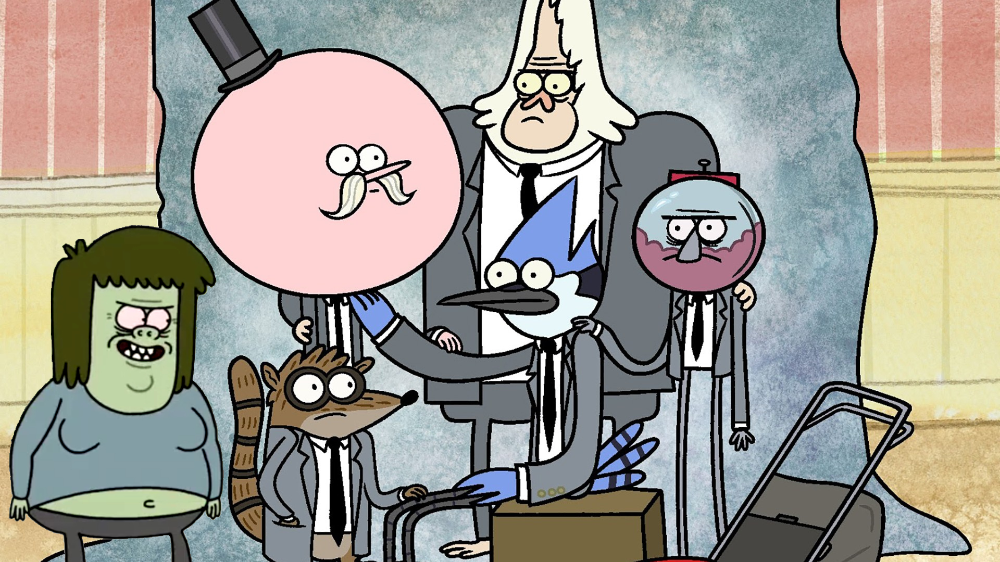

This a Fan Site dedicated to Regular Show
These are the main characters, Mordecai and Rigby.
Mordecai is a blue jay, and Rigby is a raccoon.
They've known each other since childhoold, went
to the same school, and, after an incident where Rigby
tampered with Mordecai's college acceptance letter,
ended up both working jobs at a park, where they embark
on crazy adventures together.
These are my favorite, characters. They show up the most often,
so it seems super obvious to pick them as my favorites, but
they are my favorites, none the less. Apart from Mordecai and
Rigby, who I told you about, the gumball machine is Benson, their
boss and manager of the park, the gorilla is Skips (formerly Walks)
, the pink, round headed man is Pops (like a lolipop), and the green
man is Mitch (aka. Muscle Man).
Season 1, Episode 12 - Mordecai and the Rigbys
Mordecai and Rigby accidentally get into a gig for a battle of
the bands and have to prepare, having no musical experience.
After spilling soda on a musical record, older versions of themselves
appear, apparently being celebrity musicians in the future, and they recieve
help from their older selves to prepare for the gig.
This scene is the song they perform at the battle of the bands, which
they turn out to have been lip-syncing to without knowing it, as
planned by their older selves. When they find this out, they immediately
swear never to turn out the way their older selves had, erasing
their older selves from existance. Despite not winning battle of the
bands, the crowd still appreciated the performance, after a speech that
Mordecai gives.
Season 7, Episode 23 - Gary's Synthesizer
Mordecai and Rigby go to Synthos after accidentally reseting
Gary's synthesizer, which caused him to vanish. When they finally
fix Gary's synthesizer, Gary reappears and fights his half-brother
(as you can see in this video), David, who took over Synthos while Gary
was on Earth.